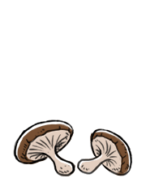

shiitake
Shiitake, or Lentinula edodes, is an edible mushroom that grows in groups on the decaying wood of deciduous trees. When cooked, these mushrooms have a savory, earthy umami flavor. They are sold both fresh and dried, dried shiitakes can be reconstituted in water. Shiitake are used as a base in vegan dashi, to flavor simmered and steamed dishes. They are also used in soups, or sauteed with other vegetables. Rarely, consumption of raw or slightly cooked shiitake mushrooms may cause an allergic reaction called shiitake dermatitis. They will keep 1-2 weeks when stored in a paper bag in the refrigerator.
mushroom
Mushrooms are the fleshy fruiting body of a fungus. They grow above ground, soil or from a food source. UV ray-treated (due to both sunlight and articial UV light tech) mushrooms are a source of vitamin d2. Many mushrooms are poisonous, resembling certain edible species. Gathering mushrooms in the wild is risky for the inexperienced and should only be undertaken by persons knowledgeable in mushroom identification.